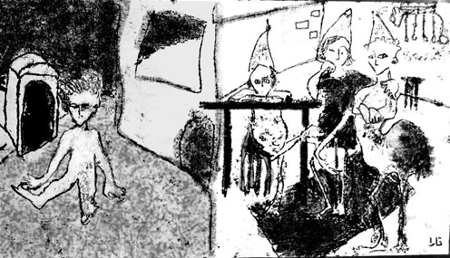

پذيرش > كوچه به كوچه > در تاریکی، کلید مناسب را پیدا کردن.../ تارا نجداحمدی


 در تاریکی، کلید مناسب را پیدا کردن.../ تارا نجداحمدی در تاریکی، کلید مناسب را پیدا کردن.../ تارا نجداحمدی
20 شهریور 1386 - - نسخه قابل چاپ
بدرود مقدس:
آنگاه که درون، گردمان را می گیرد
چون دور دستی آزموده،
چون سویه دیگر هوا
ناب،
غول آسا،
نامسکون.
"ریلکه"
به نیمه شب ها راندن عادت کرده ام. با دهان نیمه باز و سرعت زیاد از زیر ردیف چراغ های زرد اتوبان های خالی راندن ، اندوه و دود و سکوت و چراغ های قرمز و سبز بی اهمیت. شب ها به خانه برگشتن از فرودگاه ها و مهمانی های خداحافظی... در آغوش کشیدن ها . قول ها، شوخی ها، کلمه های بی فایده و لبخند های سخت، نگاه های آخر، آخرین جمله ها و زیر لب روز های دیگری را آرزو کردن ها. " آرزو کردن و آرزو کردن ها"
امشب هم به خانه رسیدم. پیدا کردن کیف و کاغذ ها و یادگاری ها از کف ماشین... چراغ ها را خاموش کردن... قفل فرمان ... راه رفتن تا در... در سکوت و تاریکی... کلید مناسب را پیدا کردن... آسانسور صورتی... پشت به آینه ایستادن... وارد شدن به نور زرد خانه و تلاش بیهوده برای حرف زدن و چیزی نگفتن ...
سمیه می خندید و می گفت: "برای گرفتن امضاها هم که شده بلاخره اومدی ببینمت بی معرفت ؟" می خندیم .
دختر بچه کوچکی ازدر وارد میشود، بچه یکی از فامیل های دوراست که شب آخر برای خداحافظی پیدایشان شده و قصد رفتن هم ندارند ... دختر بچه از سر و کول ما بالا میرود. نمونه کاملی ازیک بچه زبان نفهم وقت نشناس ! سمیه از امروز می پرسد. امروز افتتاحیه نمایشگاه نقاشی فرهنگسرای بهمن بود. کشتارگاه سابق. برایش تعریف میکنم که محل نصب کارمن وهانا خوب نبود، چون چراغ نداشت و زنجیرها هم قدیمی بود و کار تقریبا کج نصب شده بود و ازین غرغرهای همیشگی. ( فردا ظهر می فهمم که بعد از مراسم افتتاحیه کارما را کلا از روی دیوار برداشته اند.)
مادر سمیه وارد میشود. می بوسدم و می گوید: " کی میشه تو هم بری خلاص شی؟ دنبال کارات هستی یا نه؟!"
و بچه را کشان کشان می برد.
سکوت می شود، سعی می کنیم در باره چیزی صحبت کنیم. کتاب هایم را پس می دهد. مانتوی نویی که دیگر لازمش ندارد را به من می دهد وبرگه های امضایی که جمع کرده را هم به من می سپرد.
یادگاری های کوچکش را می دهم. یادگاری هایی سبک و قابل حمل برای همکلاسی عزیز سال های دورم. دوست تمام دیوانگی ها و قهقهه های قدیم.
می گوید:" مواظب خودت باش. هیچ چیز به این زودی تغییر نمی کند، فکر نکنم به عمر ما قد بدهد!"
در آغوش میکشمش. سعی میکنیم مثل آدم های بالغ و منطقی خداحافظی کنیم. تا آسانسور عقب عقب راه میروم و برای آخرین بار تماشایش می کنم .
این روز ها بهترین دوستانم از ایران رفتند...
سمیه امشب رفت.
دیروز هم شادی رفت.
هانا رفته است...
یلدا رفته،
بابک رفته،
شبنم هم به زودی میره،
سحر رفته،
پرگل و آوید رفته اند.
علیرضا، سام، پیام ...
رفته اند تا کار و درس و مطالعه را، نفس کشیدن و خندیدن را، راه رفتن و خوردن و خوابیدن و خواب دیدن را، لباس پوشیدن و دوست داشتن و اندیشیدن را، در سرزمین های آزاد تری تجربه کنند. تا در خیابان هایی امن تر از خیابان های سرتاسر تهدید و ترس شهرمان راه بروند و زندگی را به زبانی غیر از زبان مادریشان در سرزمینی دیگرتجربه کنند. رفته اند تا غربت و همیشه "خارجی بودن" را درمیان مردم شادتر و امیدوارتری تجربه کنند. تا تحت قوانین انسانی تر و متمدن تری زندگی کنند، هر چند... دربند طناب های نامرئی تنهایی و خاطراتشان.
آن ها شهرشان، زبانشان، کارشان، خانواده و دوستانشان، خیابان ها و خانه ها و کمد ها و کتابخانه ها و سرزمین موشک باران شده کودکیشان را ترک کردند. نه چندان به خواست خود... آن ها که با هوش ترین و توانا ترین و دوست داشتنی ترین آدم هایی بودند که می شناختم...
نیمه شب است. ازخانه سمیه برمی گردم. این موقع شب سر شهرک ترافیک عجیبیه... جلوتر، زیر صدها چراغ و لامپ چشمک زن، دو پسر بچه به ماشین ها شیرینی تعارف می کنند و دو مرد درشت هیکل هم هیجان زده شربت پخش می کنند. خیابان کیپ تا کیپ بسته شده و دست های مردم به دنبال شربت و شیرینی از پنجره های ماشین ها بیرون است...
ارسال به
بالاترین
،
توییتر
،
فریندفید
،
فیسبوک
در همين بخش :
 روايت بيست و پنجمين شهريور / نرگس طیبات روايت بيست و پنجمين شهريور / نرگس طیبات
وقتی آتش خاموش شود/فرشته نوبخت
آن گاه که زن شدم / ویژه نامه 8 مارس 1391
چیزی زیر پوست این شهر می جوشد / دلارام علی
گرسنگی / وبلاگ سیب و سرگشتگی
ديگر بخش ها :
طرح یک میلیون امضا
|
مقالات
|
سایت نوشته ها
|
اخبار
|
گزارش كمپين
|
گفت و گو
|
علیه سکوت
|
كوچه به كوچه
|
نامه های شما
|
گزارش ویژه
|
گفتگو با اعضا
|
ویژه سالگرد کمپین
|
تصویر برابری
|
دل آرام علی
|
تریبون
|
مقالات
|
تاریخ شفاهی
|
خارج از چارچوب
|
کتابخانه
|
درباره کمپین
|
کمپین در شهرها
|
کمپین در بند
|
صدای تغییر
|
ویژه 22 خرداد
|
لایحه حمایت از خانواده
|
گالری
|
عشا مومنی
|
امیر یعقوبعلی
|
خدیجه مقدم
|
راحله عسگری زاده و نسیم خسروی
|
پروین اردلان،جلوه جواهری، مریم حسین خواه، ناهید کشاورز
|
زینب پیغمبرزاده
|
سعیده امین، سارا ایمانیان، محبوبه حسین زاده، ناهید کشاورز و همایون نامی
|
احترام شادفر
|
نسیم سرابندی زاده،فاطمه دهدشتی
|
وبلاگ مهمان
|
پرونده خرم آباد
|
دستگیری ها
|
مریم مالک
|
پرستو اللهیاری
|
مهرنوش اعتمادی
|
سمیه رشیدی
|
Other Languages
|
همراهان
|
«فراخوان کمپین ده روز با بهاره هدایت»
| English
|